2013-03-10
Tags: tomato
Tomato firmware的好用，用過的都知道。這東東是幹啥的就不多說了，不清楚的人請自己拜一下Google大神吧。我把一些常用功能memo下來，免的之後忘掉時又要查老半天...XD
===========================================================================
<刷機流程>
ASUS RT-N16刷Tomato(shibby版)軔體，可參照下述簡述流程。如果是其它機型，在網路上應該也找的到相關資訊
1.安裝RT-N16官方公用程式軟體
2.把作業系統的軟體防火牆關掉
3.把電腦與RT-N16的LAN連線，其它孔位的線都拔掉
4.把電腦的IP設成固定IP，設成192.168.1.2
5.拔掉RT-N16電源，按下背後的Restore按鈕不放，接著插回電源，直到電源指示燈開始閃爍才放開
6.執行官方的Firmware Restoration軟體，選擇「tomato-K26USB-1.28.RT-MIPSR2-102-AIO.trx」檔案，接著按下「上載」鈕
7.程式執行成功後會出現「系統救援成功」開頭的訊息。在這之後等個五分鐘再拔RT-N16電源，接著進行重啟。如果執行完後出現「找不到無線網卡」這類訊息，這是因為作業系統的軟體防火牆沒關，把防火牆關掉後再照之前的流程重刷軔體就不會再出現這問題
8.把電腦的IP設成原先的DHCP自動取得
9.連到 http://192.168.1.1，登入WebConsole(預設密碼是 id:root / pwd:admin)。到 Administration > Configuration > Restore Default Configuration > Erase all data in NVRAM memory (thorough)，清除NVRAM所有儲存資料，然後重啟RT-N16
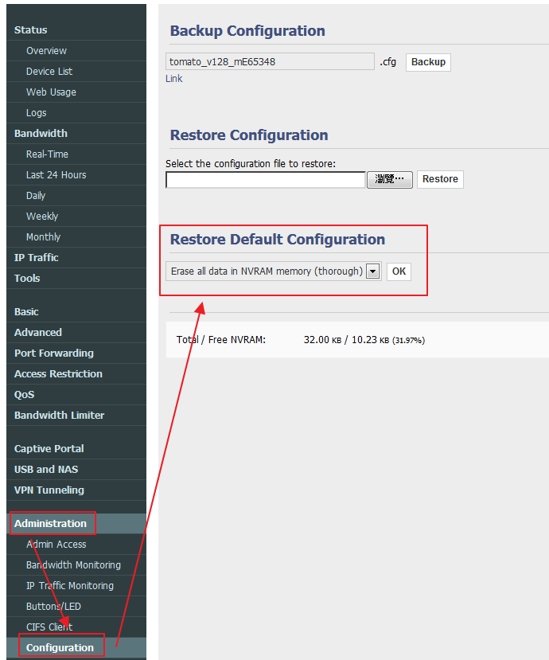
10.重新登入WebConsole，進行各項設定。root密碼要改掉免的被hack。Wireless要設定密碼免的網路被人用爽爽。平常如果用不到Wireless的話乾脆就把這功能關掉，要用時才啟用。至於PPPOE撥號連線部份，只要設定撥號帳號與密碼就好，"Service Name"欄位不要填值，不然會連線失敗
11.把作業系統的軟體防火牆打開
12.移除RT-N16官方公用程式
===========================================================================
<功能設定簡述>
1.要改WebConsole登入密碼，到 Administration > Admin Access 裡面設定
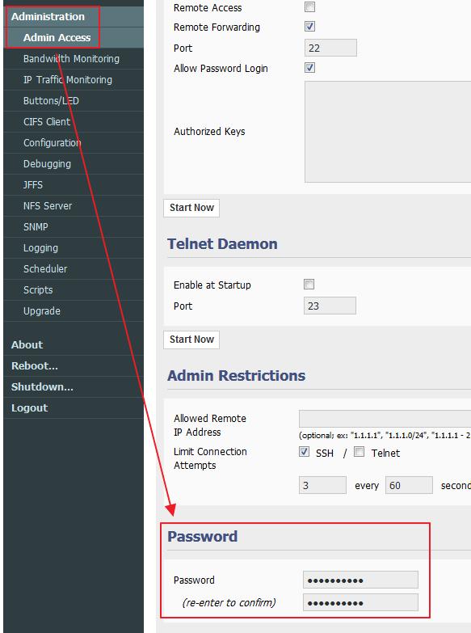
2.想設定對外網路連線(e.g PPPoE)或Wireless功能，到 Basic > Network 裡面設定
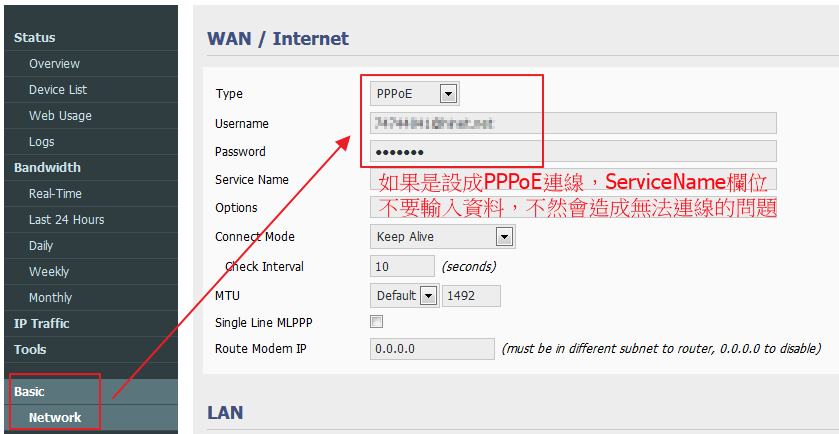
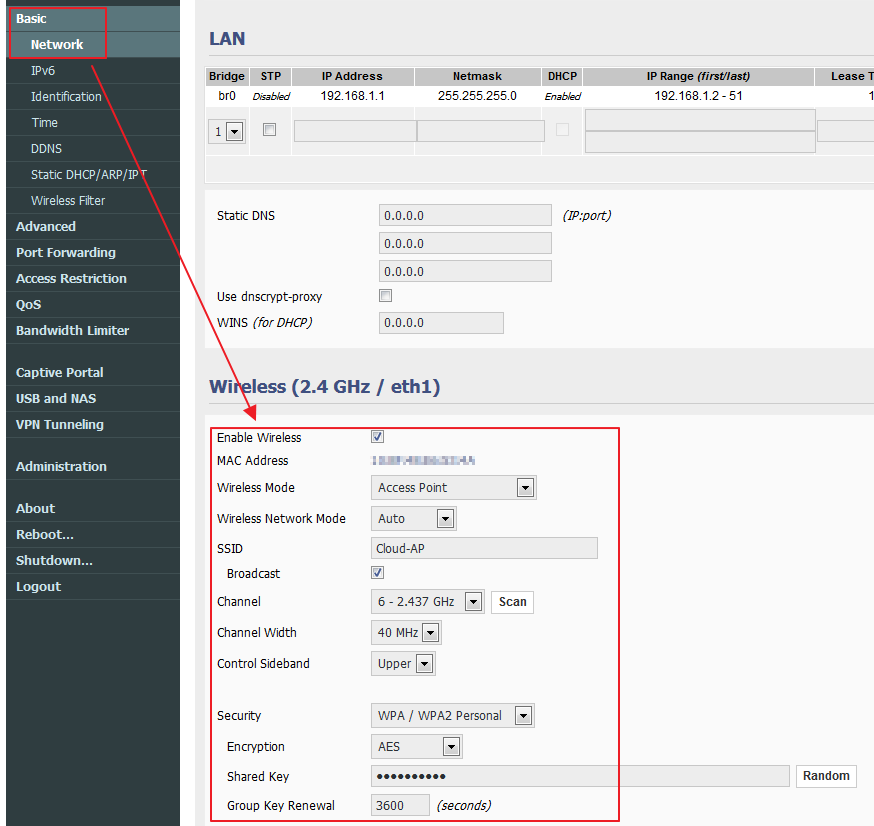
3.想隨時關掉或啟用WAN或Wireless功能，到 Status > Overview 裡面設定
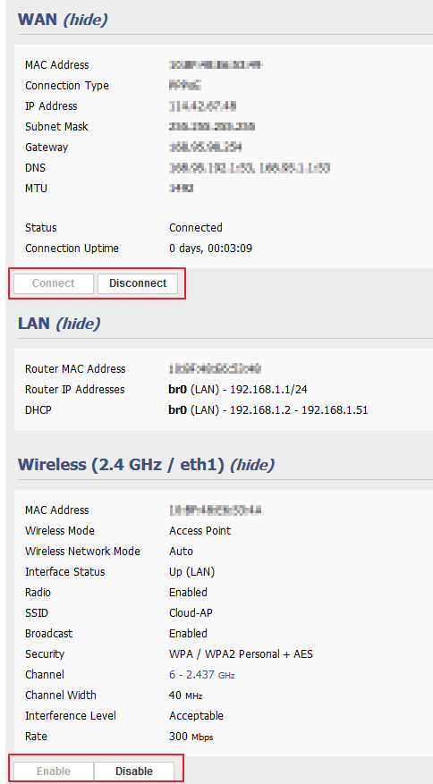
4.想要改變Wireless訊號強度，到 Advanced > Wireless 裡面改 Transmit Power 設定，設定值請介於0~60之間。設成60代表訊號最強，但是也最耗電，調小則是有相反的效果。這個值超過60以上無義意，只是浪費電力而已，訊號不會因此更強。另外，如果覺的訊號傳輸很不穩定，可以試著把 Receive Antenna、Transmit Antenna 的值設成圖中所示之值，會有一定程度的效果。(註：這個條列項目的解說，我是參考網路討論串上
其一、
其二文章，我實測後有一定成效)
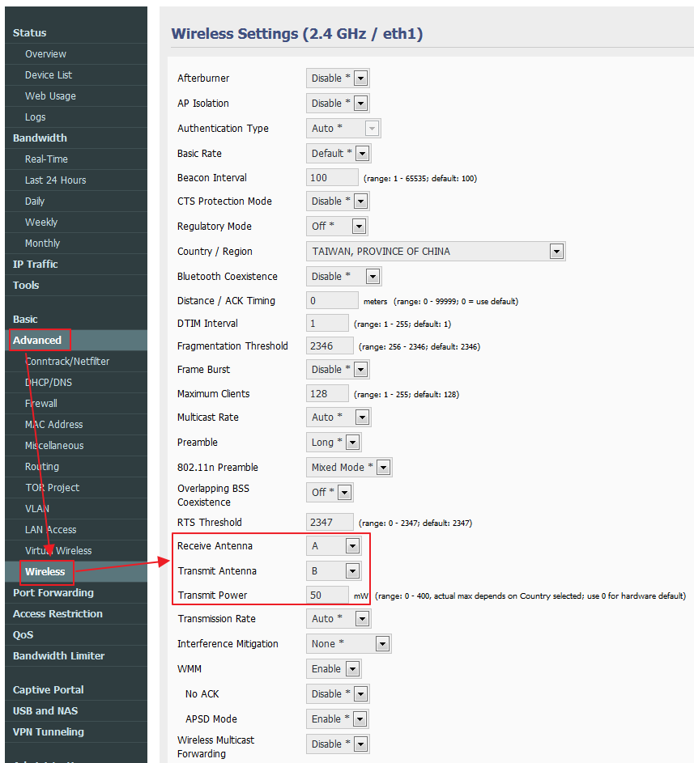
5.想定時自動Reboot機器或是定時自動重連對外網路(浮動IP用戶可以用這招來reset每天的對外IP)，可到 Administration > Scheduler 裡設定
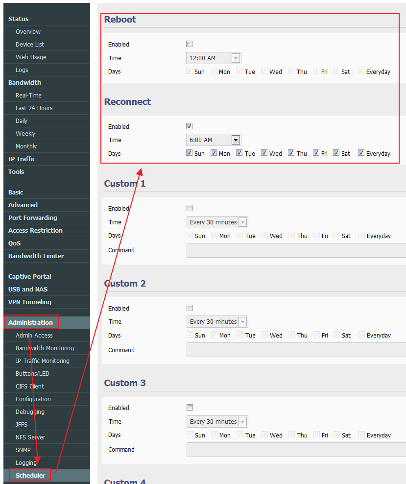
6.要限制網路存取，到 Access Restriction 裡設定
6.1.如果你是用HinetNet，又遇到連YouTube超慢，可以照下圖設定把CHT的YouTube cache server擋掉，強制走國外線路。這會讓YouTube連線變快很多
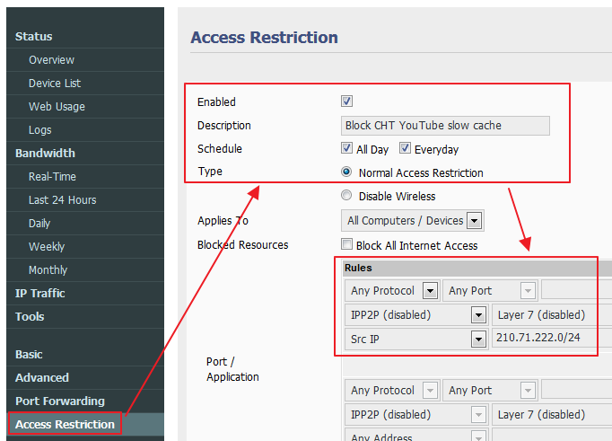
6.2.想要每天定時把Wireless關掉，可照下圖設定。我習慣深夜時段會讓它自動關掉，因為這時段我用不到Wireless功能，而且還可以降低一點被hacking的風險
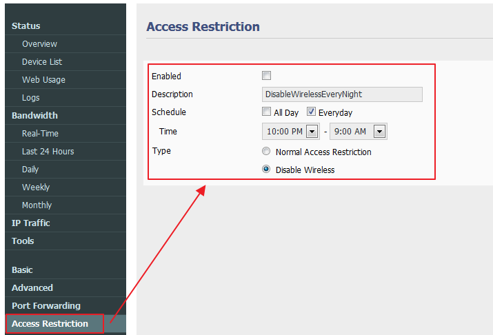
7.有在用P2P軟體的記的把UPnP功能打開，這功能在 Port Fowarding > UPnP/NAT-PMP 裡面
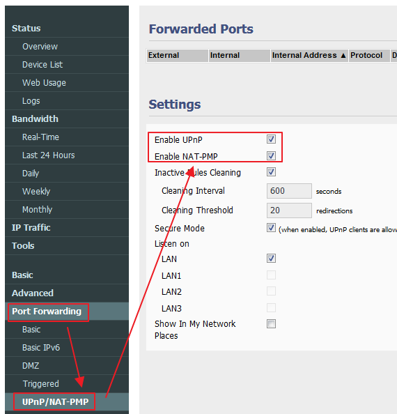
8.LAN跟WAN的頻寬用量可在 Bandwidth 設定裡查詢
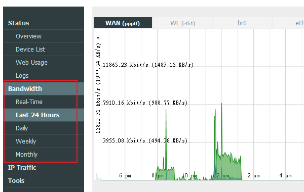
===========================================================================
<IPv6功能設定>
1.如果你是Hinet的用戶，而且你電腦的作業系統是Win7，可以去申請「IPv6 Dual Stack Service」試用服務，申請流程參照
此網址(簡單來說就是填好申請表格後郵寄到「中華電信數據分公司行銷處一科」就行了)。在服務開通後你的電腦會同時配發一個IPv4跟一個IPv6。
用了Hinet的IPv6功能後，最大好處是看Youtube影片不再卡卡
2.當服務開通後，要做下列設定才可以讓電腦同時取得IPv4跟IPv6
2.1.啟用Router的IPv6功能，並設定IPv6的DNS(我是設Hinet跟Google IPv6 DNS)
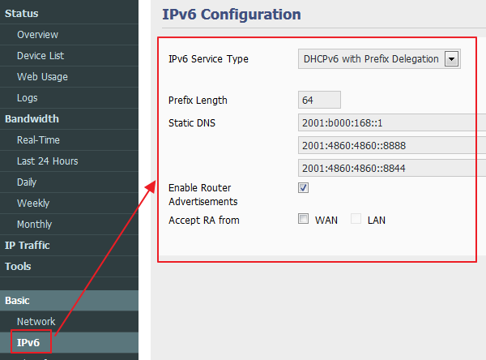
2.2.接著把WAN斷線重連，重連後就可以看到啟用了IPv4跟IPv6功能
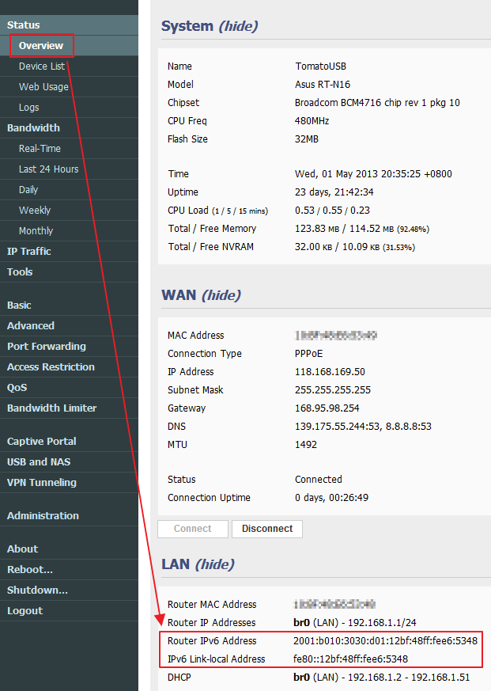
2.3.進行最後一個步驟，確認電腦的IPv4跟IPv6功能都有啟用。設定完成後電腦同時就有二個IP，當連到的網站支援IPv6時會用IPv6連線過去，不支援的網站則是走IPv4
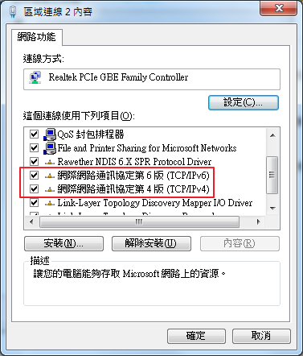
{kind=link}
{kind=link}
{kind=link}
{kind=link}
{kind=link}
{kind=link}
{kind=link}
{kind=link}
{kind=link}
{kind=link}
{kind=link}
{kind=link}
{kind=link}
{kind=link}